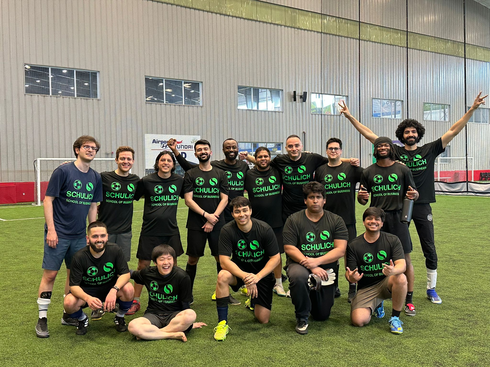
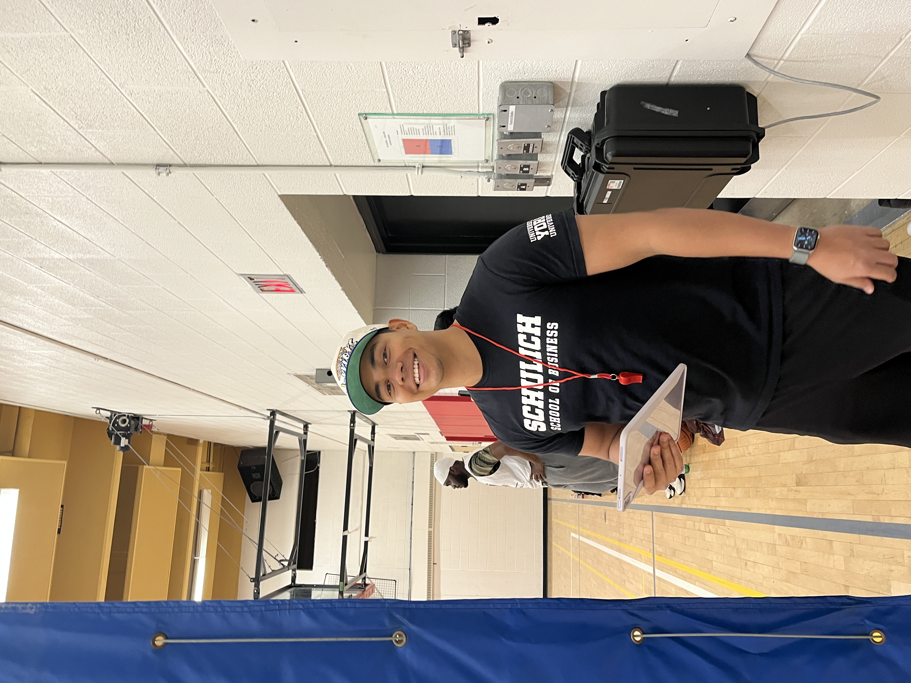
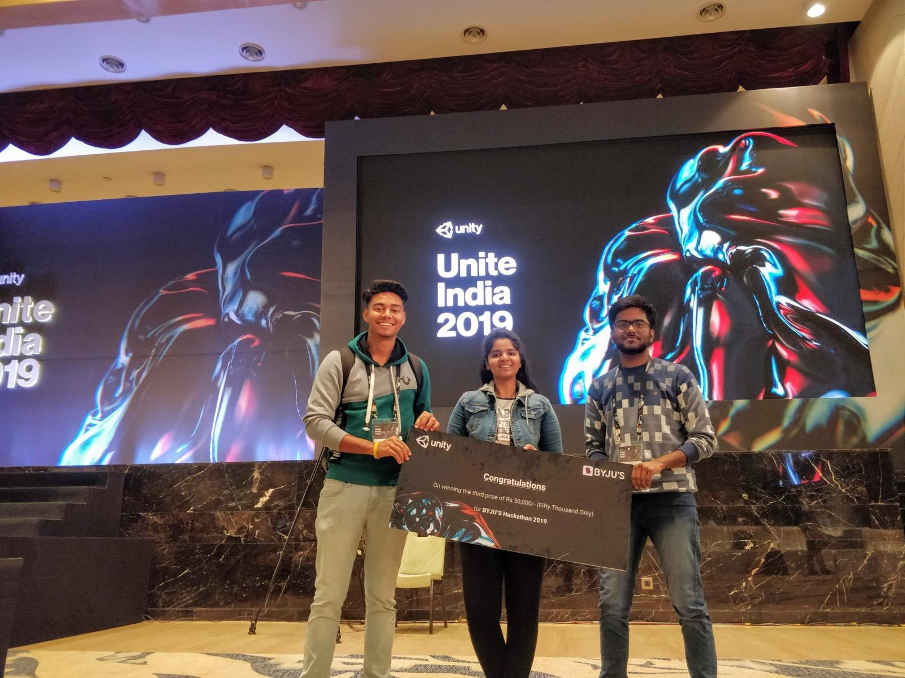
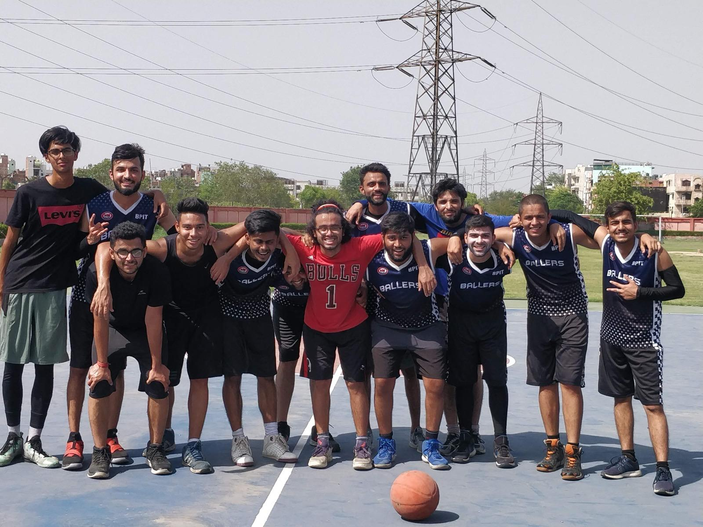
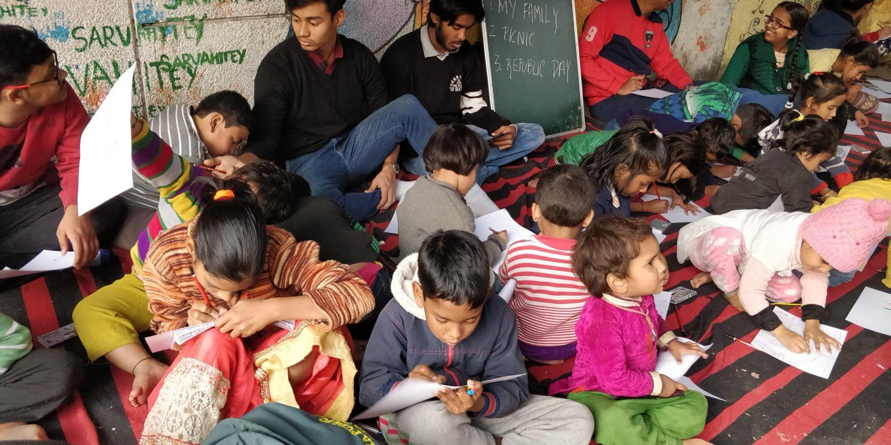
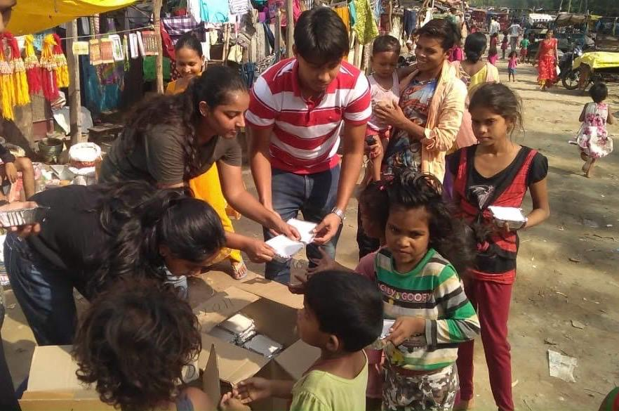

Captain, Schulich Soccer · Ivey Tournament
Captained our squad to 1st place at the Ivey Business School soccer tournament in London, Ontario, beating seven other MBA programs over a weekend.
Schulich · 20251st / 8
I help teams turn messy operational data into strategy decks that actually get decisions made. Engineer by training, consultant by trade, MBA by choice.
Engineering discipline, analytical rigor, business judgment. Most people pick one. I work at the intersection.
CS undergrad, then 4 years at ZS Associates building dashboards for global pharma, now doing an MBA at Schulich where my team won Dean's Cup Round 1 and placed top-3 every round. Currently consulting for an early-stage startup in Toronto.
Looking for strategy, analytics, and tech roles. The kind that need someone equally comfortable writing SQL and presenting to a VP.

Captained our squad to 1st place at the Ivey Business School soccer tournament in London, Ontario, beating seven other MBA programs over a weekend.

Ran year-round athletics and engagement for the Schulich MBA cohort: intramurals, tournaments, and inter-cohort social leagues.

Built a narrative Unity game with a 3-person team, placing 3rd out of 450 teams at the national Gamethon at Unite India 2019.

Played college basketball through undergrad. The start of a long habit of team sports that carried into Schulich.

Taught ~30 underprivileged children across two NGOs through undergrad, covering English, math, and basic computer skills. Still connected with Choti Si Khushi today.

Volunteered with the Robin Hood Army, a zero-funds organization, to collect surplus food from restaurants, weddings, and events across Delhi and redistribute hot meals to children and families in underserved communities. Part of a city-wide movement turning food waste into nourishment for those who need it most.
I'm actively looking for full-time roles starting mid-2026. Toronto, remote, or open to relocation. Happy to chat about the work, the résumé, or anything you saw here.